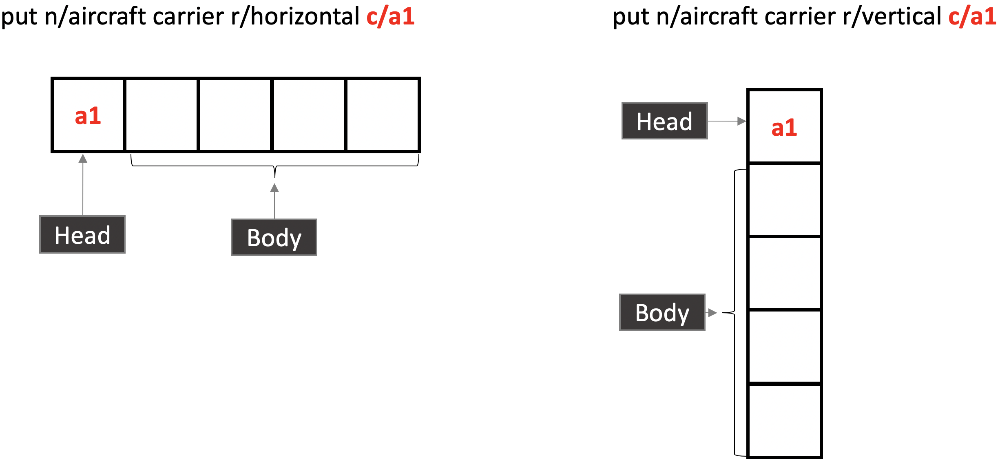

By: Team W14-3 Since: Jan 2019 Licence: MIT
- 1. Setting up
- 2. Design
- 3. Implementation
- 4. Documentation
- 5. Testing
- 6. Dev Ops
- Appendix A: Product Scope
- Appendix B: User Stories
- Appendix C: Use Cases
- Appendix D: Non Functional Requirements
- Appendix E: Glossary
- Appendix F: Product Survey
- Appendix G: Instructions for Manual Testing (!!Must change to fit our context!!)
1. Setting up
1.1. Prerequisites
-
JDK
9or laterJDK 10on Windows will fail to run tests in headless mode due to a JavaFX bug. Windows developers are highly recommended to use JDK9. -
IntelliJ IDE
IntelliJ by default has Gradle and JavaFx plugins installed.
Do not disable them. If you have disabled them, go toFile>Settings>Pluginsto re-enable them.
1.2. Setting up the project in your computer
-
Fork this repo, and clone the fork to your computer
-
Open IntelliJ (if you are not in the welcome screen, click
File>Close Projectto close the existing project dialog first) -
Set up the correct JDK version for Gradle
-
Click
Configure>Project Defaults>Project Structure -
Click
New…and find the directory of the JDK
-
-
Click
Import Project -
Locate the
build.gradlefile and select it. ClickOK -
Click
Open as Project -
Click
OKto accept the default settings -
Open a console and run the command
gradlew processResources(Mac/Linux:./gradlew processResources). It should finish with theBUILD SUCCESSFULmessage.
This will generate all resources required by the application and tests. -
Open
MainWindow.javaand check for any code errors-
Due to an ongoing issue with some of the newer versions of IntelliJ, code errors may be detected even if the project can be built and run successfully
-
To resolve this, place your cursor over any of the code section highlighted in red. Press ALT+ENTER, and select
Add '--add-modules=…' to module compiler optionsfor each error
-
-
Repeat this for the test folder as well (e.g. check
HelpWindowTest.javafor code errors, and if so, resolve it the same way)
1.3. Verifying the setup
-
Run the
seedu.address.MainAppand try a few commands -
Run the tests to ensure they all pass.
1.4. Configurations to do before writing code
1.4.1. Configuring the coding style
This project follows oss-generic coding standards. IntelliJ’s default style is mostly compliant with ours but it uses a different import order from ours. To rectify,
-
Go to
File>Settings…(Windows/Linux), orIntelliJ IDEA>Preferences…(macOS) -
Select
Editor>Code Style>Java -
Click on the
Importstab to set the order-
For
Class count to use import with '*'andNames count to use static import with '*': Set to999to prevent IntelliJ from contracting the import statements -
For
Import Layout: The order isimport static all other imports,import java.*,import javax.*,import org.*,import com.*,import all other imports. Add a<blank line>between eachimport
-
Optionally, you can follow the UsingCheckstyle.adoc document to configure Intellij to check style-compliance as you write code.
1.4.2. Updating documentation to match your fork
After forking the repo, the documentation will still have the SE-EDU branding and refer to the se-edu/addressbook-level4 repo.
If you plan to develop this fork as a separate product (i.e. instead of contributing to se-edu/addressbook-level4), you should do the following:
-
Configure the site-wide documentation settings in
build.gradle, such as thesite-name, to suit your own project. -
Replace the URL in the attribute
repoURLinDeveloperGuide.adocandUserGuide.adocwith the URL of your fork.
1.4.3. Setting up CI
Set up Travis to perform Continuous Integration (CI) for your fork. See UsingTravis.adoc to learn how to set it up.
After setting up Travis, you can optionally set up coverage reporting for your team fork (see UsingCoveralls.adoc).
| Coverage reporting could be useful for a team repository that hosts the final version but it is not that useful for your personal fork. |
Optionally, you can set up AppVeyor as a second CI (see UsingAppVeyor.adoc).
| Having both Travis and AppVeyor ensures your App works on both Unix-based platforms and Windows-based platforms (Travis is Unix-based and AppVeyor is Windows-based) |
1.4.4. Getting started with coding
When you are ready to start coding,
-
Get some sense of the overall design by reading Section 2.1, “Architecture”.
-
Take a look at [GetStartedProgramming].
2. Design
2.1. Architecture

The Architecture Diagram given above explains the high-level design of the App. Given below is a quick overview of each component.
The .pptx files used to create diagrams in this document can be found in the diagrams folder. To update a diagram, modify the diagram in the pptx file, select the objects of the diagram, and choose Save as picture.
|
Main has only one class called MainApp. It is responsible for,
-
At app launch: Initializes the components in the correct sequence, and connects them up with each other.
-
At shut down: Shuts down the components and invokes cleanup method where necessary.
Commons represents a collection of classes used by multiple other components.
The following class plays an important role at the architecture level:
-
LogsCenter: Used by many classes to write log messages to the App’s log file.
The rest of the App consists of four components.
Each of the four components
-
Defines its API in an
interfacewith the same name as the Component. -
Exposes its functionality using a
{Component Name}Managerclass.
For example, the Logic component (see the class diagram given below) defines it’s API in the Logic.java interface and exposes its functionality using the LogicManager.java class.
How the architecture components interact with each other
The Sequence Diagram below shows how the components interact with each other for the scenario where the user issues the command delete 1.

delete 1 commandThe sections below give more details of each component.
2.2. UI component
API : Ui.java
The UI consists of a MainWindow that is made up of parts e.g.CommandBox, ResultDisplay, PersonListPanel, StatusBarFooter, BrowserPanel etc. All these, including the MainWindow, inherit from the abstract UiPart class.
The UI component uses JavaFx UI framework. The layout of these UI parts are defined in matching .fxml files that are in the src/main/resources/view folder. For example, the layout of the MainWindow is specified in MainWindow.fxml
The UI component,
-
Executes user commands using the
Logiccomponent. -
Listens for changes to
Modeldata so that the UI can be updated with the modified data.
2.3. Logic component
API :
Logic.java
-
Logicuses theAddressBookParserclass to parse the user command. -
This results in a
Commandobject which is executed by theLogicManager. -
The command execution can affect the
Model(e.g. adding a person). -
The result of the command execution is encapsulated as a
CommandResultobject which is passed back to theUi. -
In addition, the
CommandResultobject can also instruct theUito perform certain actions, such as displaying help to the user.
Given below is the Sequence Diagram for interactions within the Logic component for the execute("delete 1") API call.

delete 1 Command2.4. Model component

API : Model.java
The Model,
-
stores a
UserPrefobject that represents the user’s preferences. -
stores the Address Book data.
-
exposes an unmodifiable
ObservableList<Person>that can be 'observed' e.g. the UI can be bound to this list so that the UI automatically updates when the data in the list change. -
does not depend on any of the other three components.
As a more OOP model, we can store a Tag list in Address Book, which Person can reference. This would allow Address Book to only require one Tag object per unique Tag, instead of each Person needing their own Tag object. An example of how such a model may look like is given below.
|
2.5. Storage component

API : Storage.java
The Storage component,
-
can save
UserPrefobjects in json format and read it back. -
can save the Address Book data in json format and read it back.
2.6. Battle component
API : Battle.java
The Battle component,
-
keeps track of the progress of the battle,
-
restricts the computer to place its ships at the correct time,
-
allows the user and the computer enemy to attack each other and maintain proper turn-taking while doing so.
As the
2.7. Common classes
Classes used by multiple components are in the seedu.addressbook.commons package.
3. Implementation
This section describes some noteworthy details on how certain features are implemented.
3.1. Map Feature
3.1.1. Current Implementation
The map feature is facilitated by MapGrid and Cell.
The map grid is stored internally in MapGrid as a 2D array of Cell objects.
MapGrid implements the following method to initialise the map.
-
MapGrid#initialise(Cell[][] map)— initialises the map using the givenCell2D array.
Below is the code snippet for the initialise method
for (int i = 0; i < size; i++) {
for (int j = 0; j < size; j++) {
playerMapView[i][j] = cellGrid[i][j].getStatus();
}
}
return playerMapView;
}cellGrid is the internal 2D array comprising of Cell objects.
The method copy2dArray copies the map parameter passed in to the internal cellGrid
Below is the code snippet for the copy2dArray method.
/**
* Change the ObservableValue to trigger the UI change
*/
public void updateUi() {
if (uiUpdateSwitch.getValue() == false) {
uiUpdateSwitch.setValue(true);
} else {The copy2dArray method creates a new Cell object for each of the input Cell objects.
The copying is done using a constructor in Cell that takes in a parameter Cell.
This constructor copies the private attributes of the given Cell parameter.
The following sequence diagram shows how a map is initialised:

3.1.2. Design Considerations
Aspect: How initialise map works
-
Alternative 1 (current choice):
MapGridwill have an initialise method that takes in a 2D array ofCellobjects. The initialise method inMapGridwill then do a deep copy of the passed in 2D array to initialise the internal 2D array ofCell.-
Pros: The underlying 2D array in
MapGridis better protected from modification as it can only be modified through the initialise method. -
Cons: Might have more overhead due to deep copying.
-
-
Alternative 2:
MapGridwill have a getter method that returns the 2D array ofCell.InitialiseMapCommandwill then use this method to get the internal 2D array and populate it from outside of theMapGridclass.-
Pros: Easy to implement.
-
Cons: The 2D array within
MapGridis unprotected and open for modification.
-
Alternative 1 was chosen as the overhead is negligible and a defensive approach to the design is preferable.
Aspect: Data structure to support the map
-
Alternative 1 (current choice): 2D array of
Cellobjects.-
Pros: Resulting code is simple and readable.
-
Cons: More changes to be done from the original AB4 codebase.
-
-
Alternative 2: List of lists of
Cellobjects.-
Pros: Easier to implement from the original AB4 codebase.
-
Cons: Bad code readability and more complicated.
-
Alternative 1 was chosen because of good code readability and it being the simpler implementation. Good code readability is important for new developers taking on the project. Simpler implementation means the likelihood of bugs being introduced is less when changes are made.
3.2. Battleship Feature
3.2.1. Current Implementation
A battleship is a basic class representing a battleship that can be placed on the map grid. The length of the battleship varies, depending on the type of battleship. There are three types of battleships:
-
Cruiser of length 2.
-
Destroyer of length 3.
-
Aircraft carrier of length 5.
The number of battleship types that a user can deploy on the map depends on the size of the map. It is given by the formula:
-
Number of cruisers =
mapSize - 5 -
Number of destroyers =
(mapSize + 2) / 5. -
Number of aircraft carriers =
1.
The user can tag a battleship using a t/[TAG] parameter in the put command. Tagging battleships is optional.
The head of a battleship refers to the top-most and left-most cell of the battleship. When coordinates are specified in the put command, it specifies the coordinates of the head of the battleship, as shown in the figure below.
|

put command refer to the coordinates of the battleship head.
The following operations are called when the put command is called.
-
performChecks()- performs boundary checks on the map grid to ensure that the battleship can be placed on the map. -
putShip()- puts the battleship into the cell. -
getCell()- gets the cell that is specified by the coordinates provided by the user.
Here is an example of a given user scenario.
Step 1. Initialise the map to a map of size 10.
Step 2. Put the battleship on the map by specifying the name, coordinates, orientation, and tags.
The following sequence diagram shows how a battleship is put on the map.

Battleships can be tagged. You can list all the tags used by battleships that have been deployed on the map grid using the listTags command. The sequence diagram below shows how the tags are listed.
Battleships that have been deployed can also be listed. Battleships can be listed in four different ways:
-
List all battleships.
-
List battleships that have certain tags.
-
List battleships of a certain type.
-
List battleships of a certain type that have certain tags.
Here is an example of a given user scenario. In this scenario, the user has deployed some battleships on a 10 by 10 map grid with various tags.
Step 1. Initialise the map to a map of size 10. Step 2. Deploy battleships by specifying the name, coordinates, orientation, and tags. We will deploy the following battleships:
-
Cruiser at a4 vertical with tag
tag1. -
Cruiser at d4 vertical with tag
tag1. -
Cruiser at f7 horizontal with tag
tag2. -
Cruiser at h8 horizontal with tag
tag2. -
Destroyer at d4 horizontal with tag
tag1.
Step 3. List the battleships.

Step 4. List the battleships by name. Use cruiser.
Step 5. List the battleships by name and tags. Use cruiser with tag2.
The following sequence diagram shows how deployed battleships are listed when the list command is entered into the command line.

3.2.2. Design Considerations
Aspect: How a battleship is placed on the map
-
Alternative 1 (current choice):
The sameBattleshipobject is put in multiple cells. Each cell contains a reference to the sameBattleshipobject. When a battleship on theCellneeds to be modified, theBattleshipattribute in theCellis accessed.-
Pros: This allows any cell that is hit to access the same
Battleshipobject without having to separately find theBattleshipobject. -
Cons: Difficult to keep track of each
Battleshipposition.
-
-
Alternative 2:
Have two separateBattleshipandBattleshipPartobjects. TheBattleshipPartobject represents the "body" of theBattleshipand contains an attribute that points to theBattleship. When a battleship on theCellneeds to be modified, theBattleshipPartis accessed, which then accesses the mainBattleshipobject.-
Pros: Clearer separation between the "body" of the Battleship and the Battleship itself.
-
Cons: Difficult to handle hit on the cell.
-
Aspect: Data structure to record battleships in player
-
Alternative 1 (current choice):
ArrayListofFleetEntry, whereFleetEntrycontains a reference to theBattleship, itsOrientationandCoordinatesof the head. TheFleetEntrysubclass exists inFleet. Whenever aFleetmethod is called, it accesses theArrayListofFleetEntryto obtain information about theBattleshipand its position on theMapGrid.-
Pros: Can identify
Battleshipby position. -
Cons: Harder to implement.
-
-
Alternative 2:
ArrayListofBattleship.-
Pros: Easier to implement and provides a cleaner design.
-
Cons: Harder check position of
Battleshipon the map grid. In order to do so, a separate data structure has to be initialised to store the coordinates and orientation of the battleship. This data structure then has to be aligned with the originalArrayListthat stores the battleship.
-
3.3. Battle Feature
3.3.1. Current Implementation
The Battle feature handles the following:
-
keeping track of the stage of the battle, and ensuring that the player does not enter a command in the wrong stage of the game,
-
allowing the computer to place its ships at the correct time,
-
allowing the user and the computer enemy to attack each other and maintain proper turn-taking while doing so.
The Battle feature is split between several packages:
-
seedu.address.battle: the mainBattleclass is implemented here -
seedu.address.battle.state: the battle state classes are implemented here, and can be stored and retrieved viaModel. -
seedu.address.battle.result: the attack result classes are implemented here. These classes are returned byBattle#humanPerformAttack(coordinates)andBattle#takeComputerTurn(). -
BeginCommand,AttackCommandandEndTurnCommandhandle the player’s interaction with this component.
The sequence diagram of what happens when the user enters the begin command is as follows:

3.3.2. Design Considerations
-
Alternative 1 (current choice):
BattleManageris stored underModel. Every timeAttack,EndTurnorBegincommands are executed, they will use thisBattleManagerto actually perform the actions, with the logic in theCommand-s mostly being error handling.
When AI performs attacks, theBattleManagerwill call the AI to compute its attack and return it, then call an internal method to actually perform the attack.-
Pros:
-
Command logic is abstracted into places where it can be reused by the AI.
-
-
Cons:
-
The
Modelcomponent now contains game logic (BattleManager) within it.
-
-
-
Alternative 2:
BattleManageris stored underLogic. Every timeAttack,EndTurnorBegincommands are executed, they will perform the action using the logic coded within themselves, not interfacing withBattleManager.
When AI performs attacks, theBattleManagerwill create these commands and execute them. In theModel, the current attacking player is kept track of, allowing the commands to be used for both a human and AI player.-
Pros:
-
The game’s model and logic are kept separate from each other.
-
-
Cons:
-
AttackCommand is now state-dependent (the state being the current attacking player) which can more easily lead to bugs and race conditions.
-
-
3.4. Enemy AI Feature
3.4.1. Current Implementation
The Enemy AI feature is currently implemented as an extension of the Player class,
and serves as the opponent player since Battleship is a single-player game.
The Enemy AI can automatically perform initialising actions similar to the human player.
Mainly, the Enemy AI can randomly initialise its own mapGrid with randomly generated ships,
which is invoked by the command start game.
The Enemy AI also supports the ability for the enemy to intelligently shoot
the player’s map when the player inputs the end turn command.
Note that the Enemy AI feature does not contain any explicit commands to be entered by the Player. Its methods are called by other features instead, and does its magic in the background.
Initialising Enemy MapGrid
The Enemy AI has the method populateMapGrid which is called by the method prepEnemy(),
which is in turn called by the Battle Manager when the Player enters the command start game.
populateMapGrid() will generate randomised battleships based on the number of battleships
available to it for the current game, as specified in its Parent class - Player.
The number of battleships available to the Enemy AI is congruent to the number of battleships
available to the Player. The exact number of the different types of battleships is decided from on
a formula that is based on the map size specified by the player in the init command. Once these randomised
battleships are generated, populateMapGrid will proceed to call placeAirCraftCarrier() and placeMultipleDestroyerAndCruiser().
Calculating Cell to Attack
The Enemy AI has the method enemyShootAt() that is invoked when the player ends their turn
with the command end turn. The Enemy AI will attempt to generate a random Coordinate to attack,
and pass this Coordinate to the BattleManager. The Enemy AI supports the ability to
check that its generated coordinates are all valid, and has further algorithm that will
increase its accuracy upon detecting a successful hit.
Note: All actions taken by the Enemy AI are seeded by a pseudo-random generator. Thus, its behaviour will be different for every game session.
3.4.2. Design Considerations
-
Alternative 1 (current choice): seed all methods with pseudo-random seed
-
Pros: each game will be a different experience
-
Cons: testing will be more difficult
-
-
Alternative 2: pre-calculate and hardcode the actions the Enemy AI performs
-
Pros: testing is made very much easier
-
Cons: games would be less dynamic since the enemy’s behaviour is non-organic
-
3.5. Statistics Feature
3.5.1. Current Implementation
The stats feature allows users to view their current gameplay information. This information will be displayed in a pop-up window and will include: Number of Attacks Made, Number of Successful Hits, Number of Misses, Number of Enemy Ships Destroyed and Accuracy of Shots made.
This feature stems from a central abstract class that is extended to for a player. It is initialized with the main components upon the start of the application and is subsequently passed down as a parameter to the relevant methods which will invoke the corresponding updating methods to the statistical information.
The following operations are invoked upon the calling of the stats command.
-
getAttacksMade()- Returns the number of attacks made by the User -
getMovesLeft()- Returns the remaining number of moves left for the User -
getHitCount()- Returns the number of successful hit on enemy ships -
getMissCount()Returns the number of misses made -
getEnemyShipsDestroyed()Returns the number of Enemy Ships Destroyed by the player -
getAccuracy()Returns the current Hit-Miss Ratio of the User based on the game so far
Given below is an example usage scenario and how the stats command behaves at each step.
Step 1. The User initializes the game with the init 8 which will create a 8x8 map.
! The Map can be initialized to any valid size (This is just a sample scenario)
Step 2. Put the ships accordingly…
Step 3. Input stats into the command-line and press enter to obtain the current statistical data.

! Note, there should not be any valid data at the moment as the game as not started. ! Include Screenshot explaining pop-up window and lack of data
Step 4. Now proceed with the game and perform an attack ….
Step 5. Invoke the stats command again to view the updated statistics

The following sequence diagram summarizes what happens when a User invokes the stats command.
3.5.2. Output Statistical Data
Besides the pop-up window, the data is also captured in the command-line result box.

3.5.3. Design Considerations
-
Alternative 1 (current choice): Statistics class will have an initialise method that with a set of default configuration that are used by any Statistics Variant.
-
Pros: The underlying variables and values in Statistics is better protected from modification.
-
Cons: It does not accommodate changes in default settings.
-
-
Alternative 2: Statistics is stored entirely within StatsCommands
-
Pros: Easy to code and less lines of code.
-
Cons: Does not abide by Single Responsibility Principle as the
StatsCommandwill also contain filtering and analysis of data.
-
3.6. Logging
We are using java.util.logging package for logging. The LogsCenter class is used to manage the logging levels and logging destinations.
-
The logging level can be controlled using the
logLevelsetting in the configuration file (See Section 3.7, “Configuration”) -
The
Loggerfor a class can be obtained usingLogsCenter.getLogger(Class)which will log messages according to the specified logging level -
Currently log messages are output through:
Consoleand to a.logfile.
Logging Levels
-
SEVERE: Critical problem detected which may possibly cause the termination of the application -
WARNING: Can continue, but with caution -
INFO: Information showing the noteworthy actions by the App -
FINE: Details that is not usually noteworthy but may be useful in debugging e.g. print the actual list instead of just its size
3.7. Configuration
Certain properties of the application can be controlled (e.g user prefs file location, logging level) through the configuration file (default: config.json).
4. Documentation
We use asciidoc for writing documentation.
| We chose asciidoc over Markdown because asciidoc, although a bit more complex than Markdown, provides more flexibility in formatting. |
4.1. Editing Documentation
See UsingGradle.adoc to learn how to render .adoc files locally to preview the end result of your edits.
Alternatively, you can download the AsciiDoc plugin for IntelliJ, which allows you to preview the changes you have made to your .adoc files in real-time.
4.2. Publishing Documentation
See UsingTravis.adoc to learn how to deploy GitHub Pages using Travis.
4.3. Converting Documentation to PDF format
We use Google Chrome for converting documentation to PDF format, as Chrome’s PDF engine preserves hyperlinks used in webpages.
Here are the steps to convert the project documentation files to PDF format.
-
Follow the instructions in UsingGradle.adoc to convert the AsciiDoc files in the
docs/directory to HTML format. -
Go to your generated HTML files in the
build/docsfolder, right click on them and selectOpen with→Google Chrome. -
Within Chrome, click on the
Printoption in Chrome’s menu. -
Set the destination to
Save as PDF, then clickSaveto save a copy of the file in PDF format. For best results, use the settings indicated in the screenshot below.

4.4. Site-wide Documentation Settings
The build.gradle file specifies some project-specific asciidoc attributes which affects how all documentation files within this project are rendered.
Attributes left unset in the build.gradle file will use their default value, if any.
|
| Attribute name | Description | Default value |
|---|---|---|
|
The name of the website. If set, the name will be displayed near the top of the page. |
not set |
|
URL to the site’s repository on GitHub. Setting this will add a "View on GitHub" link in the navigation bar. |
not set |
|
Define this attribute if the project is an official SE-EDU project. This will render the SE-EDU navigation bar at the top of the page, and add some SE-EDU-specific navigation items. |
not set |
4.5. Per-file Documentation Settings
Each .adoc file may also specify some file-specific asciidoc attributes which affects how the file is rendered.
Asciidoctor’s built-in attributes may be specified and used as well.
Attributes left unset in .adoc files will use their default value, if any.
|
| Attribute name | Description | Default value |
|---|---|---|
|
Site section that the document belongs to.
This will cause the associated item in the navigation bar to be highlighted.
One of: * Official SE-EDU projects only |
not set |
|
Set this attribute to remove the site navigation bar. |
not set |
4.6. Site Template
The files in docs/stylesheets are the CSS stylesheets of the site.
You can modify them to change some properties of the site’s design.
The files in docs/templates controls the rendering of .adoc files into HTML5.
These template files are written in a mixture of Ruby and Slim.
|
Modifying the template files in |
5. Testing
5.1. Running Tests
There are three ways to run tests.
| The most reliable way to run tests is the 3rd one. The first two methods might fail some GUI tests due to platform/resolution-specific idiosyncrasies. |
Method 1: Using IntelliJ JUnit test runner
-
To run all tests, right-click on the
src/test/javafolder and chooseRun 'All Tests' -
To run a subset of tests, you can right-click on a test package, test class, or a test and choose
Run 'ABC'
Method 2: Using Gradle
-
Open a console and run the command
gradlew clean allTests(Mac/Linux:./gradlew clean allTests)
| See UsingGradle.adoc for more info on how to run tests using Gradle. |
Method 3: Using Gradle (headless)
Thanks to the TestFX library we use, our GUI tests can be run in the headless mode. In the headless mode, GUI tests do not show up on the screen. That means the developer can do other things on the Computer while the tests are running.
To run tests in headless mode, open a console and run the command gradlew clean headless allTests (Mac/Linux: ./gradlew clean headless allTests)
5.2. Types of tests
We have two types of tests:
-
GUI Tests - These are tests involving the GUI. They include,
-
System Tests that test the entire App by simulating user actions on the GUI. These are in the
systemtestspackage. -
Unit tests that test the individual components. These are in
seedu.address.uipackage.
-
-
Non-GUI Tests - These are tests not involving the GUI. They include,
-
Unit tests targeting the lowest level methods/classes.
e.g.seedu.address.commons.StringUtilTest -
Integration tests that are checking the integration of multiple code units (those code units are assumed to be working).
e.g.seedu.address.storage.StorageManagerTest -
Hybrids of unit and integration tests. These test are checking multiple code units as well as how the are connected together.
e.g.seedu.address.logic.LogicManagerTest
-
5.3. Troubleshooting Testing
Problem: HelpWindowTest fails with a NullPointerException.
-
Reason: One of its dependencies,
HelpWindow.htmlinsrc/main/resources/docsis missing. -
Solution: Execute Gradle task
processResources.
6. Dev Ops
6.1. Build Automation
See UsingGradle.adoc to learn how to use Gradle for build automation.
6.2. Continuous Integration
We use Travis CI and AppVeyor to perform Continuous Integration on our projects. See UsingTravis.adoc and UsingAppVeyor.adoc for more details.
6.3. Coverage Reporting
We use Coveralls to track the code coverage of our projects. See UsingCoveralls.adoc for more details.
6.4. Documentation Previews
When a pull request has changes to asciidoc files, you can use Netlify to see a preview of how the HTML version of those asciidoc files will look like when the pull request is merged. See UsingNetlify.adoc for more details.
6.5. Making a Release
Here are the steps to create a new release.
-
Update the version number in
MainApp.java. -
Generate a JAR file using Gradle.
-
Tag the repo with the version number. e.g.
v0.1 -
Create a new release using GitHub and upload the JAR file you created.
6.6. Managing Dependencies
A project often depends on third-party libraries. For example, Address Book depends on the Jackson library for JSON parsing. Managing these dependencies can be automated using Gradle. For example, Gradle can download the dependencies automatically, which is better than these alternatives:
-
Include those libraries in the repo (this bloats the repo size)
-
Require developers to download those libraries manually (this creates extra work for developers)
Appendix A: Product Scope
Target user profile:
-
has a need to manage a significant number of contacts
-
prefer desktop apps over other types
-
can type fast
-
prefers typing over mouse input
-
is reasonably comfortable using CLI apps
Value proposition: manage contacts faster than a typical mouse/GUI driven app
Appendix B: User Stories
Priorities: High (must have) - * * *, Medium (nice to have) - * *, Low (unlikely to have) - *
| Priority | As a … | I want to … | So that I can… |
|---|---|---|---|
|
new player |
see usage instructions |
refer to instructions when I forget how to use the App |
|
player |
initialise a new game board / map |
start a new game |
|
player |
put a battleship on the map |
play the game |
|
player |
tag my battleships |
manage my battleships during the game |
|
player |
list my battleships |
check the status of my battleships during the game |
|
player |
list my battleships by tag |
check the status of specific battleships during the game |
|
user |
see the number of actions I made |
keep track of my play style |
|
user |
see the number of successful attacks I made |
keep track of how well I am doing in the game |
|
user |
see where my battleships are on the map |
have a visual representation of the game |
|
user |
list my battleships |
know the status of my fleet |
|
player |
end my turn |
the enemy can start its turn |
{More to be added}
Appendix C: Use Cases
(For all use cases below, the System is the Battleship and the Actor is the user, unless specified otherwise)
Use case: Initialise Maps
MSS
-
User requests to initialise maps
-
Battleship creates and displays both player’s maps
Use case ends.
Extensions
-
2a. The map size is invalid.
-
2a1. Battleship shows an error message
Use case resumes at step 1.
-
C.1. Use case: Put Battleship
MSS
-
User requests to add battleship to given coordinate specified.
-
Battleship adds a ship to the given coordinate specified, in the cell.
Use case ends.
Extensions
-
2a. If there is a ship present in the cell, show an error.
C.2. Use case: List Battleship
MSS
-
User requests to list battleships deployed on map.
-
Shows all of the user’s battleships deployed on map.
Use case ends.
Extensions
-
2a. If there are no ships deployed, inform the user.
C.3. Use case: List tags that Battleships have
MSS
-
User requests to list tags of battleships that have already been deployed on map.
-
Shows all of the tags of battleships that have already been deployed on map.
Use case ends.
C.4. Use case: List Battleships by tag
MSS
-
User requests to list battleships deployed on map that have certain tags.
-
Shows all of the user’s battleships deployed on map that have certain tags.
Use case ends.
Extensions
-
2a. If there are no ships deployed, inform the user.
C.5. Use case: View statistics
MSS
-
User requests to display current gameplay statistics
-
Shows all of the user’s gameplay data in one location.
Use case ends.
C.6. Use case: End player turn
MSS
-
User requests for enemy to start turn.
-
User’s turn is automatically ended.
-
Enemy player turn starts.
Use case ends.
C.7. Use case: Play enemy turn
Actor: enemy player
MSS
-
Enemy turn starts.
-
Enemy performs Enemy Attack(See Enemy Attack Use Case).
-
Enemy turn ends.
-
Control is given back to Player
{More to be added}
Appendix D: Non Functional Requirements
-
Should work on any mainstream OS as long as it has Java
9or higher installed. -
Should be able to hold up to 1000 persons without a noticeable sluggishness in performance for typical usage.
-
A user with above average typing speed for regular English text (i.e. not code, not system admin commands) should be able to accomplish most of the tasks faster using commands than using the mouse.
{More to be added}
Appendix F: Product Survey
Product Name
Author: …
Pros:
-
…
-
…
Cons:
-
…
-
…
Appendix G: Instructions for Manual Testing (!!Must change to fit our context!!)
Given below are instructions to test the app manually.
| These instructions only provide a starting point for testers to work on; testers are expected to do more exploratory testing. |
G.1. Launch and Shutdown
-
Initial launch
-
Download the jar file and copy into an empty folder
-
Double-click the jar file
Expected: Shows the GUI with a set of sample contacts. The window size may not be optimum.
-
-
Saving window preferences
-
Resize the window to an optimum size. Move the window to a different location. Close the window.
-
Re-launch the app by double-clicking the jar file.
Expected: The most recent window size and location is retained.
-
{ more test cases … }
G.2. Initialising the maps
-
Initialising the maps after launching the game
-
Test case:
init 7
Expected: Displays two empty map grids of size 7 in the GUI. Both maps will have the appropriate alphanumeric labels on the first row and column. -
Test case:
init 0
Expected: If this is the first command ran, no map will be displayed. Otherwise, no changes will be made to the displayed maps. Error message will be displayed in the result display box. -
Other incorrect initialise commands to try:
init,init x(where x is smaller or larger than the specified minimum or maximum map size respectively).
Expected: No map will be displayed if this is the first command ran. Otherwise, no changes will be made to the displayed map.
-
G.3. Putting a ship
-
Putting a ship on the map after initialising the map.
-
Prerequisites: There are ships in your fleet ready to be deployed. This means that the number of battleships in the fleet is more than 0. The map is initialised to a size between 6 and 10.
-
Test case:
put n/destroyer r/horizontal c/b1
Expected: Destroyer battleship of size 3 will be put horizontally on coordinatesb1,b2andb3. The map is updated with 3 black cells on each of these coordinates representing the Destroyer battleship. -
Test case:
put n/aircraft carrier r/horizontal c/c1 t/bluefleet
Expected: Aircraft Carrier battleship of size 5 will be put horizontally on coordinatesc1,c2,c3,c4andc5. The map is updated with 5 black cells on each of these coordinates representing the Aircraft Carrier battleship. -
Test case:
put n/aircraft carrier r/horizontal c/e1 t/nomore
Expected: No battleship is put down on the map. Error details shown in the status message. Map remains the same. -
Test case:
put n/destroyer r/vertical c/b1
Expected: No battleship is put down on the map. Error details shown in the status message. Map remains the same. -
Test case:
put n/destroyer r/vertical c/a1
Expected: No battleship is put down on the map. Error details shown in the status message. Map remains the same. -
Test case:
put n/destroyer r/vertical c/z1
Expected: No battleship is put down on the map. Error details shown in the status message. Map remains the same.
-
{ more test cases … }
G.4. Viewing the statistics
To test the stats feature. We will perform a before and after check to see if the statistical data of a simple behaviour is captured. In this case, we will perform an attack with a miss result.
-
Initialize a 8x8 map using
init 8. -
Run the
statscommand and observe the results-
Test case :
stats(before)
Expected: All fields are 0.
-
-
Now input
attack c1to simulate an attack on the enemy map.-
Test case :
stats(after)
Expected: Number of attacks : 1, Number of Misses : 1
-
G.5. Saving data
-
Dealing with missing/corrupted data files
-
{explain how to simulate a missing/corrupted file and the expected behavior}
-
{ more test cases … }